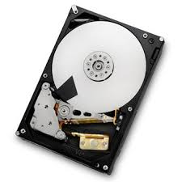
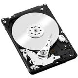
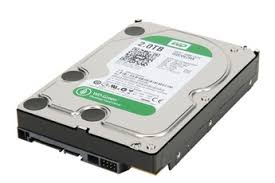
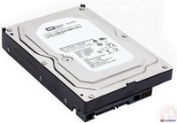
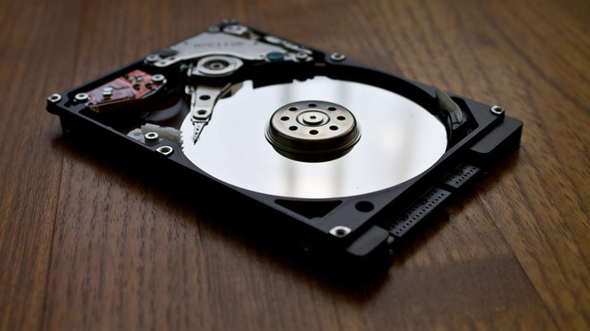
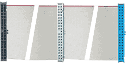
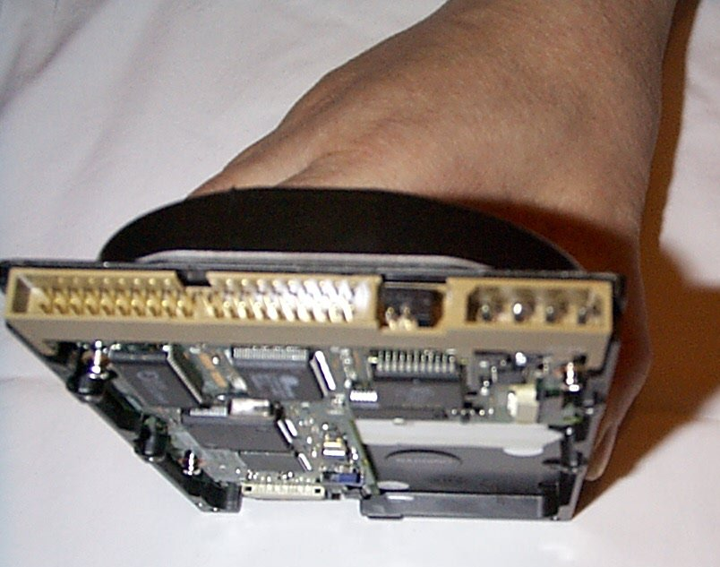
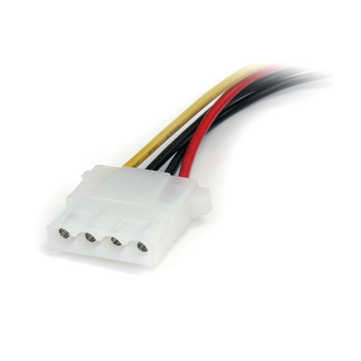

Ide signifie "Interface Drive Electronics. C'est donc une interface de connexion utilisée pour les mémoires de masse (les disques dur par exemple). La connectique offre un débit maximum de 133 MB/s. Certaines passerelles multimédia embarquent une connectique IDE permettant de brancher un disque dur.
   
Les avantages pour les disques durs IDE
- Ils sont pas cher - 150 Mo par seconde suffisent largement pour toutes les applications
Les inconvénients pour les disques durs IDE
- L'instabilité de leur taux de transfert et leur temps d'accès est bien trop important, ce qui limite leurs performances

Les ordres de branchement pour les disques dur IDE

Sur une nappe IDE, il y a 3 ports (Voir l'image au dessus) - Le port Bleu se branche donc sur la carte mère - Le port Noir signifie "MAITRE" donc c'est ici que vous devez branchez votre disque dur principal avec un système d'exploitation - Le port gris signifie "ESCLAVE ou SLAVE" ce qui permet d'ajouter un deuxième disque dur sur votre ordinateur

A gauche c'est ici que vous branchez la nappe IDE, si c'est votre disque dur principal brancher le port Noir (MASTER), si c'est votre 2ème disque dur, brancher le port Gris (ESCLAVE ou SLAVE). A droite, branchez le cable d'alimentation du disque dur.

Voici le cable d'alimentation pour un disque IDE
Hard Drive Mechanic, site sur le fonctionnement des disques durs - Tous droits réservés. Copyright Mentions LégalesContactez Site Créé par Sébastien BUNEL